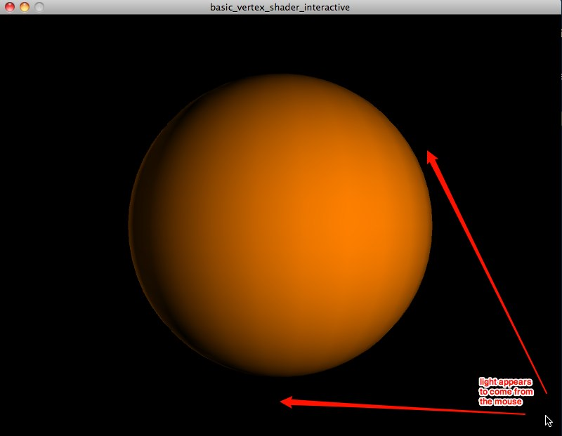
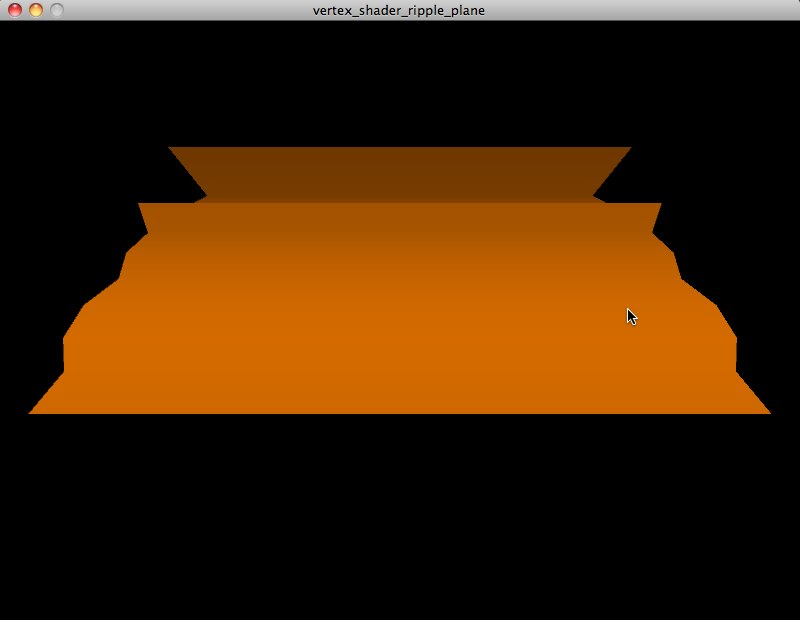

Introduction
Welcome to Processing Shader Examples! This is where I try to learn about shaders using Processing and the Processing GLGraphics library (http://glgraphics.sourceforge.net/) and record my experiments and the lessons I learn. The repo for this project is here: https://github.com/atduskgreg/Processing-Shader-Examples Each sub-directory of this repo includes a shader example written in Processing along with a description.asciidoc file with notes about that particular example. I’ve also included all of the description files in this README for convenience (though that doesn’t seem to actually work on the project homepage in GitHub; if you’re reading this there, head to http://atduskgreg.github.com/Processing-Shader-Examples to see the real version).
Right now, I’m mainly working from Graphics Shaders: Theory and Practice by Mike Bailey and Steve Cunningham (http://www.amazon.com/Graphics-Shaders-Practice-Mike-Bailey/dp/1568813341). Andres Colubri, author of the GLGraphics library, was an enormous help in getting started especially a session he taught at ITP Camp 2011 on the topic of Image Processing with Shaders in Processing. I’ve included the notes from that session here as well. It acts as a kind of introduction to the rest of this material, so we begin with it.
Image Filters and 3D Effects with GLSL by Andres Colubri
On the CPU
-
define geometry
-
beginShape() etc
-
define vertices:
-
vertex coords
-
colors
-
connectivity
-
normals
-
texturecoords
-
textures
-
On the GPU
-
GOAL: convert geometry into pixels
-
Vertex Shader:
-
convert coordinates to screen space
-
takes 3D geometry and outputs 2D geometry
-
-
Fragment/Pixel shader:
-
converts 2D geometry to an array of pixels: rasterization
-
blending algorithms
-
lighting is applied
-
leads to final pixel color
-
-
GPU is highly parallel
-
can draw every pixel simultaneously
-
GPU has many cores, hundreds
-
NVidia 5706TX has 512 cores
-
Play with Shaders in Processing
-
Andres' GLGraphics library: http://glgraphics.sourceforge.net
-
works with Processing 1.5x not 2.0
-
-
GLGraphics > Examples > Textures > BasicUse, etc.
Use Shaders for 2D Image Effects/Post-processing
-
Send an image to the GPU
-
as a textured quad:
-
beginShape(QUAD); texture(...); vertex(...); vertex(...); vertex(...); vertex(...); endShape();
-
draw the quad covering the whole screen
-
using orthographic projection
-
the vertex shader does nothing: "trivial"
-
the pixel shader is the interesting part
-
does a texture lookup to get the color of each pixel
-
can apply transformations per pixel
-
custom transformation is written in GLSL
-
-
result of shader operations gets copied into a new texture
-
has to be a new texture or you get problems
-
use ping-pong technique of swapping back and forth between two textures on alternating frames
-
Actually Writing Shaders
-
glsl file w/an XML filter file for GLGraphics
-
filter file combines vertex/fragment shaders and declares parameters
-
-
example of swapping red and green component of an image on the cpu:
PImage img;
PImage dest;
void setup(){
size(1600,600, JAVA2D);
frameRate(180);
img = loadImage("landscape.jpg");
img.loadPixels();
dest = createImage(800, 600, RGB);
dest.loadPixels();
}
void draw(){
for(int i = 0; i < img.width * img.height; i++){
color c = img.pixels[i];
dest.pixels[i] = color(green(c), red(c), blue(c), alpha(c));
}
image(img, 0,0);
image(dest,800,0);
println(frameRate);
}
-
Equivalent example on the GPU:
import processing.opengl.*;
import codeanticode.glgraphics.*;
GLTexture texSource;
GLTexture texDestination;
GLTextureFilter colorSwap;
void setup(){
size(1600, 600, GLConstants.GLGRAPHICS);
frameRate(180);
texSource = new GLTexture(this, "landscape.jpg");
texDestination = new GLTexture(this, texSource.width, texSource.height);
colorSwap = new GLTextureFilter(this, "colorSwap.xml");
}
void draw(){
colorSwap.apply(texSource, texDestination);
// synonym:
// texSource.filter(colorSwap, texDestination);
image(texSource, 0,0);
image(texDestination, 800,0);
println(frameRate);
}
-
With a filter file ("colorSwap.xml") that looks like this:
<filter name="colorSwap"> <description>Reverse red and green components of each pixel</description> <fragment>colorSwap.glsl</fragment> <textures input="1" output="1"></textures> </filter>
-
and a fragment shader ("colorSwap.glsl") that looks like this:
uniform sampler2D src_tex_unit0;
void main(void){
// get the location of the current pixel
// in the input texture
vec2 tex_coord = gl_TexCoord[0].st;
// read the color of the current pixel out of the
// input texture
vec4 src_color = texture2D(src_tex_unit0, tex_coord).rgba;
// output:
// set color of the fragment
gl_FragColor = vec4(src_color.g, src_color.r, src_color.b, src_color.a);
}
-
GPU version runs 6 times faster at least
-
now, passing arguments into the shader
-
in draw() add calls to setParameterValue()
-
void draw(){
// NEW LINES: pass arguments into the shader
colorSwap.setParameterValue("scaledMouseX", map(mouseX, 0, width, 0, 1));
colorSwap.setParameterValue("scaledMouseY", map(mouseY, 0, height, 0, 1));
colorSwap.apply(texSource, texDestination);
// synonym:
// texSource.filter(colorSwap, texDestination);
image(texSource, 0,0);
image(texDestination, 800,0);
println(frameRate);
}
-
pass these parameters through in the xml:
<filter name="colorSwap">
<description>Reverse red and green components of each pixel</description>
<fragment>colorSwap.glsl</fragment>
<textures input="1" output="1"></textures>
<parameters>
<parameter type="float" name="scaledMouseX" label="">1</parameter>
<parameter type="float" name="scaledMouseY" label="">1</parameter>
</parameters>
</filter>
-
and use them in the shader:
uniform sampler2D src_tex_unit0;
uniform float scaledMouseX;
uniform float scaledMouseY;
void main(void){
// get the location of the current pixel
// in the input texture
vec2 tex_coord = gl_TexCoord[0].st;
// read the color of the current pixel out of the
// input texture
vec4 src_color = texture2D(src_tex_unit0, tex_coord).rgba;
// output:
// set color of the fragment
gl_FragColor = vec4(src_color.g * scaledMouseX, src_color.r * scaledMouseY, src_color.b, src_color.a);
}
Basic Vertex Shader
This example reproduces the standard lighting setup on a rotating cube using a vertex shader and a very simple fragment shader.
Code here: https://github.com/atduskgreg/Processing-Shader-Examples/tree/master/basic_vertex_shader. And reproduced in full after the notes.
When running it looks like this:

Initializing Shaders directly in GLGraphics
You can work with shaders in GLGraphics without having to use an xml file. See line 9 of the sketch where the shader is declared with paths to the vertex and fragment shaders (relative to the sketch’s data directory):
vertexShader = new GLSLShader(this, "sphereShading.vert", "sphereShading.frag");
GLGraphics Renderer Causes Coordinate Confusion
If you use the GLGraphics renderer as is demonstrated in some of the GLGraphics examples, it will play havoc with pushMatrix(), popMatrix(), translate(), etc. You can still bind shaders for rendering without the GLGraphics renderer (see lines 23-25) thusly:
vertexShader.start(); box(300); vertexShader.stop();
A Vertex Shader That Reproduces Standard Lighting
The vertex shader is a bit complicated. All it’s really doing is reproducing the standard lighting model of OpenGL. It sets a fixed light position:
vec3 LightPos = vec3(3., 5., 10.);
then calculates the normals for every vertex:
vec3 transNorm = normalize(gl_NormalMatrix * gl_Normal);
and then uses the combination of those two to calculate the intensity of the light at every vertex (the dot product gives you the portion of the light vector hits the vertex along its normal, i.e. that actually shines on it):
vec3 ECposition = vec3(gl_ModelViewMatrix * gl_Vertex); LightIntensity = dot(normalize( LightPos - ECposition ), transNorm); LightIntensity = abs(LightIntensity);
ECposition is the only confusing bit here. It represents the vertex coordinate transformed from world space to the coordinates of the current point of view. After it’s calculated this LightIntensity variable doesn’t get used until the fragment shader, where it’s multiplied by the pixel’s color to achieve the shading effect.
Processing’s fill() sets gl_Color
Any color you set with fill() in Processing will come through as the gl_Color in the vertex shader. The vertex shader has to declare color as a varying variable and set it based on gl_Color in order to pass it through to the fragment shader.
A Simple Fragment Shader
The fragment shader here is incredibly simple, just one step above a pass-through. All it does is set the color of each pixel by multiplying the light intensity (as calculated in the vertex shader) by the color. All the pixels' alphas are set to 1 for fully opaque. The LightInensity and color are declared as varying variables come so they can come in from the vertex shader.
Code
basic_vertex_shader.pde
import processing.opengl.*;
import codeanticode.glgraphics.*;
GLSLShader vertexShader;
void setup() {
size(800, 600, GLConstants.GLGRAPHICS);
vertexShader = new GLSLShader(this, "sphereShading.vert", "sphereShading.frag");
noStroke();
}
float y = 0;
void draw() {
background(0);
fill(255, 255*0.5, 0);
pushMatrix();
translate(width/2, height/2, 0);
rotateY(y+=0.01);
vertexShader.start();
box(300);
vertexShader.stop();
popMatrix();
}
sphereShading.vert
varying vec4 color;
varying float LightIntensity;
void main(void){
vec3 LightPos = vec3(3., 5., 10.);
vec3 transNorm = normalize(gl_NormalMatrix * gl_Normal);
vec3 ECposition = vec3(gl_ModelViewMatrix * gl_Vertex);
LightIntensity = dot(normalize( LightPos - ECposition ), transNorm);
LightIntensity = abs(LightIntensity);
color = gl_Color;
gl_Position = gl_ModelViewProjectionMatrix * gl_Vertex;
}
sphereShading.frag
varying vec4 color;
varying float LightIntensity;
void main(void)
{
gl_FragColor = vec4(LightIntensity * color.rgb, 1.);
}
Interactive Inputs to a Shader
This example shows how to pass interactive inputs into a shader from Processing. It builds off of the Basic Vertex Shader example above. It moves the position of the lighting source illuminating a sphere based on the position of the user’s mouse.
Code here: https://github.com/atduskgreg/Processing-Shader-Examples/tree/master/basic_vertex_shader_interactive. And reproduced in full after the notes.
Set Uniforms in Processing
"Uniform" variables in a shader are ones that will be the same for every vertex or fragment processed by the shader. Any variable coming in from outside the shaders, i.e. from user input, will inherently be the same for all vertices and fragments, hence they are all declared as uniforms inside the shader. GLGraphics provides a bunch of functions for setting these in Processing in the form of shader.setXXXUniform(), where XXX specifies the type of the variable being set, float, Vec, int, etc. Here we’re using floats:
vertexShader.start();
vertexShader.setFloatUniform("mouseX", map(mouseX, 0, width, 0, 200));
vertexShader.setFloatUniform("mouseY", map(mouseY, 0, height, 200, 0));
The first argument here sets up the name of the uniform inside the shader. The second argument is the value. Note that it is very important that you call setFloatUniform() and its siblings between shader.start() and shader.end(). It will not work otherwise and the error will be obscure.
Use Uniforms in the Shader
Uniforms get declared like this in the shader (in this case in the vertex shader, sphereShading.vert):
uniform float mouseX; uniform float mouseY;
and then used like any other variable:
vec3 LightPos = vec3(mouseX, mouseY, 10.);
In this case, we’re using the x- and y-coordinates of the mouse to set the x- and y-coordinates of the light position, giving the illusion that the light source is following the user’s mouse:

Code
basic_vertex_shader_interactive.pde
import processing.opengl.*;
import codeanticode.glgraphics.*;
GLSLShader vertexShader;
void setup() {
size(800, 600, GLConstants.GLGRAPHICS);
vertexShader = new GLSLShader(this, "sphereShading.vert", "sphereShading.frag");
noStroke();
}
void draw() {
background(0);
fill(255, 255*0.5, 0);
pushMatrix();
translate(width/2, height/2, 0);
vertexShader.start();
vertexShader.setFloatUniform("mouseX", map(mouseX, 0, width, 0, 200));
vertexShader.setFloatUniform("mouseY", map(mouseY, 0, height, 200, 0));
sphere(200);
vertexShader.stop();
popMatrix();
}
sphereShading.vert
varying vec4 color;
varying float LightIntensity;
uniform float mouseX;
uniform float mouseY;
void main(void){
vec3 LightPos = vec3(mouseX, mouseY, 10.);
vec3 transNorm = normalize(gl_NormalMatrix * gl_Normal);
vec3 ECposition = vec3(gl_ModelViewMatrix * gl_Vertex);
LightIntensity = dot(normalize( LightPos - ECposition ), transNorm);
LightIntensity = abs(LightIntensity);
color = gl_Color;
gl_Position = gl_ModelViewProjectionMatrix * gl_Vertex;
}
sphereShading.frag
varying vec4 color;
varying float LightIntensity;
void main(void)
{
gl_FragColor = vec4(LightIntensity * color.rgb, 1.);
}
Using a Vertex Shader to Move Vertices
This example uses the vertex shader to move the actual position of vertices rather than just their color. It also shows how to draw a plane using triangle strips in Processing. Thanks to Andres Colubri for help debugging!
Code here: https://github.com/atduskgreg/Processing-Shader-Examples/tree/master/vertex_shader_ripple_plane. And reproduced in full after the notes.
When running it looks like this:

Altering Geometry and Re-calculating Normals
This shader moves the points on a plane up and down based on the position of the mouse. It calculates the Z position of each point as a kind of sine wave of the point’s position on the plane (multiplying by the mouseX position which is passed in as a uniform variable to make it interactive):
thisPos.z += mouseX * sin(thisX*thisX + thisY*thisY);
Since this changes the angle of the vertex relative to the light source, we have to recalculate the vertex’s normals so that lighting will still work on it correctly:
thisNorml.x = 2. * 0.3 * thisX * cos(thisX*thisX + thisY*thisY); thisNorml.y = 2. * 0.3 * thisY * cos(thisX*thisX + thisY*thisY); thisNorml.z = 1.;
Coordinate Sizzling
In looking at this shader, Andrew suggested something I could do to make it more efficient. Instead of constantly accessing the x- and y-coordinates of the current vertex as separate variables, I could use a technique he called "coordinate sizzling" to access multiple of them at once.
Instead of doing something like this (what I currently do):
float thisX = thisPos.x; float thisY = thisPos.y; thisPos.z += mouseX * sin(thisX*thisX + thisY*thisY);
I could do this:
thisPos.z += 20.0 * sin(dot(thisPos.xy, thisPos.xy)
This second version accesses both the x- and y-coordinates simultaneously. Apparently, it’s more efficient.
Drawing a Plane with a Triangle Strip
In introducing this shader example, Bailey and Cunningham say that they applied it to a quad defined "from -5 to 5 with 20 subdivisions". This was rather vague so I experimented a bit with Processing’s geometry options. Just drawing a simple four-vertex quad with "beginShape(QUADS)" didn’t work, the shader had no visible effect. So I tried again, this time with a TRIANGLE_STRIP. When I did that the shader started taking effect. Since it’s a vertex shader, it only operates on vertices, I guess, and so needed more vertices to manipulate. The distortion still seems a big, er, pointy, though so I think I’m not quite doing something right still. The illustration in the book had a nice ripples in water quality to it.
Code
vertex_shader_ripple_plane.pde
import processing.opengl.*;
import codeanticode.glgraphics.*;
GLSLShader vertexShader;
void setup() {
size(800, 600, GLConstants.GLGRAPHICS);
vertexShader = new GLSLShader(this, "planeRippler.vert", "planeRippler.frag");
noStroke();
}
void draw() {
background(0);
fill(255, 255*0.5, 0);
vertexShader.start();
vertexShader.setFloatUniform("mouseX", map(mouseX, 0, width, 0, 100));
beginShape(TRIANGLE_STRIP);
for (int i =0; i <11; i ++) {
float startX = width/2 - 200;
float startY = height/4;
int triangleHeight = 20;
vertex(startX, startY + (i * triangleHeight), (i * triangleHeight));
vertex(startX + 400, startY + (i* triangleHeight ), (i * triangleHeight));
}
endShape(CLOSE);
vertexShader.stop();
}
planeRippler.vert
varying vec3 myColor;
varying float LightIntensity;
uniform float mouseX;
void main(void){
vec3 thisNorml;
vec4 thisPos = gl_Vertex;
myColor = gl_Color.rgb;
float thisX = thisPos.x;
float thisY = thisPos.y;
thisPos.z += mouseX * sin(thisX*thisX + thisY*thisY);
// alternately, "coordinate sizzling":
// thisPos.z += 20.0 * sin(dot(thisPos.xy, thisPos.xy));
vec3 LightPos = vec3(0., 10., 0.);
thisNorml.x = 2. * 0.3 * thisX * cos(thisX*thisX + thisY*thisY);
thisNorml.y = 2. * 0.3 * thisY * cos(thisX*thisX + thisY*thisY);
thisNorml.z = 1.;
vec3 myNorml = normalize(thisNorml);
vec3 ECpos = vec3(gl_ModelViewMatrix * thisPos);
LightIntensity = dot(normalize(LightPos - ECpos), myNorml);
LightIntensity = 0.3 + abs(LightIntensity);
LightIntensity = clamp(LightIntensity, 0., 1.);
gl_Position = gl_ModelViewProjectionMatrix * thisPos;
}
planeRippler.frag
varying vec3 myColor;
varying float LightIntensity;
void main(void)
{
gl_FragColor = vec4(LightIntensity * myColor.rgb, 1.);
}
Sharpen Shader
This shader sharpens an image. See the results. It is also a good example of a simple use of a convolution kernel to modify an image, which is a common technique for image processing. Convolution kernels specify the amount of effect each pixel in the fragment’s neighborhood should have on its final output value. For example, the kernel used here for sharpen is:
{kind=link}
0 -1 0 -1 5 -1 0 -1 0
The pixel labeled "5" is the current pixel and the other values are the proportions of the surrounding pixels to use.
NOTE: It would be conventional (and superior for performance) to declare float arrays before the shader’s main() function. However, that seems not to work on OSX, so this example sets the values of both of its necessary arrays inside of main() which is bad for performance, but works and is not a problem in this simple example.
Code
sharpen_shader.pde
import processing.opengl.*;
import codeanticode.glgraphics.*;
GLTexture face;
GLTexture output;
GLTextureFilter sharpen;
int w = 640;
int h = 480;
void setup() {
size(w * 2, h, GLConstants.GLGRAPHICS);
face = new GLTexture(this, "face.jpg");
output = new GLTexture(this, w, h);
sharpen = new GLTextureFilter(this, "sharpen.xml");
}
void draw() {
sharpen.setParameterValue("imgWidth", float(w));
sharpen.setParameterValue("imgHeight", float(h));
sharpen.apply(face, output);
image(face, 0, 0);
image(output, w, 0);
}
sharpen.frag
uniform sampler2D src_tex_unit0;
uniform float imgWidth;
uniform float imgHeight;
// NOTE: we should initialize these arrays up here
// but that syntax doesn't work on OSX for some reason
// so we set these array values in main(), which
// is bad for performance, but works on OSX
float kernel[9];
vec2 offset[9];
float step_w = 1.0/imgWidth;
float step_h = 1.0/imgHeight;
void main() {
offset[0] = vec2(-step_w, -step_h);
offset[1] = vec2(0.0, -step_h);
offset[2] = vec2(step_w, -step_h);
offset[3] = vec2(-step_w, 0.0);
offset[4] = vec2(0.0, 0.0);
offset[5] = vec2(step_w, 0.0);
offset[6] = vec2(-step_w, step_h);
offset[7] = vec2(0.0, step_h);
offset[8] = vec2(step_w, step_h);
/* SHARPEN KERNEL
0 -1 0
-1 5 -1
0 -1 0
*/
kernel[0] = 0.;
kernel[1] = -1.;
kernel[2] = 0.;
kernel[3] = -1.;
kernel[4] = 5.;
kernel[5] = -1.;
kernel[6] = 0.;
kernel[7] = -1.;
kernel[8] = 0.;
vec4 sum = vec4(0.0);
int i;
for (i = 0; i < 9; i++) {
vec4 color = texture2D(src_tex_unit0, gl_TexCoord[0].st + offset[i]);
sum += color * kernel[i];
}
gl_FragColor = sum;
}
Contrast Shader
This shader adds or remove contrast from an image. See the results here. This shader could also be trivially modified to control the saturation of the image.
Code
contrast_shader.pde
import processing.opengl.*;
import codeanticode.glgraphics.*;
GLTexture face;
GLTexture output;
GLTextureFilter contrast;
int w = 640;
int h = 480;
void setup() {
size(w * 2, h, GLConstants.GLGRAPHICS);
face = new GLTexture(this, "face.jpg");
output = new GLTexture(this, w, h);
contrast = new GLTextureFilter(this, "contrast.xml");
}
void draw() {
contrast.setParameterValue("imgWidth", float(w));
contrast.setParameterValue("imgHeight", float(h));
contrast.setParameterValue("contrast", map(mouseX, 0, w/2, 0, 1));
contrast.apply(face, output);
image(face, 0, 0);
image(output, w, 0);
fill(255);
text("mouse left-right to set contrast: " + map(mouseX, 0, w/2, 0, 1), 5, height-15);
}
contrast.frag
uniform sampler2D src_tex_unit0;
uniform float imgWidth;
uniform float imgHeight;
uniform float contrast;
float step_w = 1.0/imgWidth;
float step_h = 1.0/imgHeight;
void main() {
vec3 color = vec3(texture2D(src_tex_unit0, gl_TexCoord[0].st));
const vec3 LumCoeff = vec3(0.2125, 0.7154, 0.0721);
vec3 AvgLumin = vec3(0.5, 0.5, 0.5);
vec3 intensity = vec3(dot(color, LumCoeff));
// could substitute a uniform for this 1. and have variable saturation
vec3 satColor = mix(intensity, color, 1.);
vec3 conColor = mix(AvgLumin, satColor, contrast);
gl_FragColor = vec4(conColor, 1);
}
Hatch Effect Shader
This shader was ported by Marius Watz from Meshlab.
Currently, the vertex shader fails to successfully calculate the normal between the light and each vertex which makes the light appear to move around as the spheres spin. This is a bug.
Code
hatchShader.pde
import processing.opengl.*;
import codeanticode.glgraphics.*;
GLSLShader vertexShader;
void setup() {
size(800, 800, GLConstants.GLGRAPHICS);
vertexShader = new GLSLShader(this,
"Hatch.vert", "Hatch.frag");
noStroke();
}
float y = 0;
void draw() {
background(0);
fill(255, 255*0.5, 0);
pointLight(100, 200, 100, 0, 1, 1);
pointLight(100, 200, 100, 0, 0, -1);
sphereDetail(60);
pushMatrix();
translate(width/2, height/2, 0);
rotateX(HALF_PI+(y+=0.02));
rotateY(y);
vertexShader.start();
vertexShader.setFloatUniform("frequency", map(mouseX, 0, width, 0.5, 3));
vertexShader.setFloatUniform("edgew", map(mouseY, 0, height, 0, 1));
vertexShader.setVecUniform("HatchDirection", 0, 0.5f, 0.5f);
vertexShader.setFloatUniform("Lightness", 0.2f);
scale(1.2);
translate(-100, 100, -50);
sphere(150);
translate(200, 0, 0);
sphere(150);
translate(-100, -200, 0);
sphere(150);
vertexShader.stop();
popMatrix();
}
Hatch.vert
/****************************************************************************
* MeshLab o o *
* An extendible mesh processor o o *
* _ O _ *
* Copyright(C) 2005, 2009 \/)\/ *
* Visual Computing Lab /\/| *
* ISTI - Italian National Research Council | *
* \ *
* All rights reserved. *
* *
* This program is free software; you can redistribute it and/or modify *
* it under the terms of the GNU General Public License as published by *
* the Free Software Foundation; either version 2 of the License, or *
* (at your option) any later version. *
* *
* This program is distributed in the hope that it will be useful, *
* but WITHOUT ANY WARRANTY; without even the implied warranty of *
* MERCHANTABILITY or FITNESS FOR A PARTICULAR PURPOSE. See the *
* GNU General Public License (http://www.gnu.org/licenses/gpl.txt) *
* for more details. *
* *
****************************************************************************/
uniform vec3 HatchDirection;
uniform float Lightness;
varying vec3 ObjPos;
varying float V;
varying float LightIntensity;
void main()
{
ObjPos = vec3(gl_Vertex) * 0.2;
vec3 pos = vec3(gl_ModelViewMatrix * gl_Vertex);
vec3 tnorm = normalize(gl_NormalMatrix * gl_Normal);
//vec3 lightVec = normalize(LightPosition - pos);
vec3 lightVec = normalize(vec3(gl_LightSource[0].position));
float grey = Lightness*dot (vec4(.333,.333,.333,0),gl_Color);
LightIntensity = max(grey * dot(lightVec, tnorm), 0.0);
LightIntensity = max(dot(lightVec, tnorm), 0.0);
//V = gl_MultiTexCoord0.t; // try .s for vertical stripes
V =dot(vec3(gl_Vertex),HatchDirection);
gl_Position = ftransform();
// gl_FrontColor=gl_Color;
}
Hatch.frag
/****************************************************************************
* MeshLab o o *
* An extendible mesh processor o o *
* _ O _ *
* Copyright(C) 2005, 2009 \/)\/ *
* Visual Computing Lab /\/| *
* ISTI - Italian National Research Council | *
* \ *
* All rights reserved. *
* *
* This program is free software; you can redistribute it and/or modify *
* it under the terms of the GNU General Public License as published by *
* the Free Software Foundation; either version 2 of the License, or *
* (at your option) any later version. *
* *
* This program is distributed in the hope that it will be useful, *
* but WITHOUT ANY WARRANTY; without even the implied warranty of *
* MERCHANTABILITY or FITNESS FOR A PARTICULAR PURPOSE. See the *
* GNU General Public License (http://www.gnu.org/licenses/gpl.txt) *
* for more details. *
* *
****************************************************************************/
uniform float frequency;
uniform float edgew; // width of smooth step
varying vec3 ObjPos; // object space coord (noisy)
varying float V; // generic varying
varying float LightIntensity;
void main()
{
float dp = length(vec2(dFdx(V), dFdy(V)));
float logdp = -log2(dp * 8.0);
float ilogdp = floor(logdp);
float stripes = exp2(ilogdp);
float sawtooth = fract((V ) * frequency * stripes);
float triangle = abs(2.0 * sawtooth - 1.0);
// adjust line width
float transition = logdp - ilogdp;
// taper ends
triangle = abs((1.0 + transition) * triangle - transition);
float edge0 = clamp(LightIntensity - edgew, 0.0, 1.0);
float edge1 = clamp(LightIntensity, 0.0, 1.0);
float square = 1.0 - smoothstep(edge0, edge1, triangle);
// uncomment this line to get the original color instead of white
// gl_FragColor = gl_Color * vec4(vec3(square), 1.0);
gl_FragColor = vec4(vec3(square), 1.0);
}